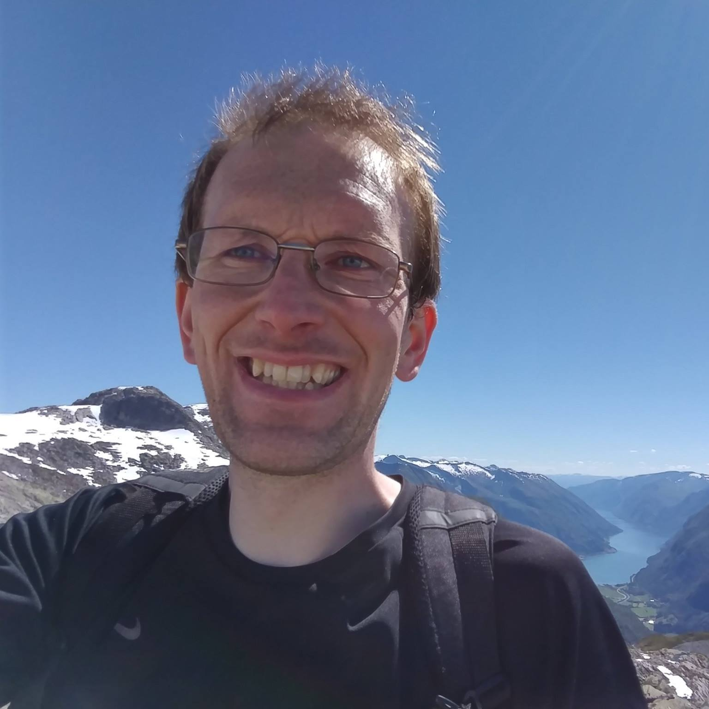
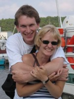

Richard Williamson

Experience / education (selected)
- April 2024 – present. Member (by invitation) of the Expert Group on Archival Description (EGAD) of the International Council on Archives. EGAD is responsible for Records in Contexts.
- May 2022 – present. Nasjonalarkivet (The National Archives of Norway), Trondheim, Norway.
- August 2012 – July 2015. Postdoktor i matematikk (postdoc in mathematics), Geometry and Topology group, NTNU, Trondheim, Norway.
- October 2007 – September 2011. DPhil (the abbreviation used instead of PhD at Oxford) student, Mathematical Institute, University of Oxford, UK, supervised by Raphaël Rouquier.
- September 2003 – July 2007. MMATH (Master of Mathematics) student, Mathematics Institute, University of Warwick, UK.
Archives
Works
Mathematics
Miscellanea
Literary works and various interests
Photos

The photo to the left is of my wife, Kari, and me in Hvaler in July 2006.
The photo at the top of the page was taken at Flatbrehytta near Fjærland in 2018.
Last updated: 09:24 (GMT+2), 19th October 2026